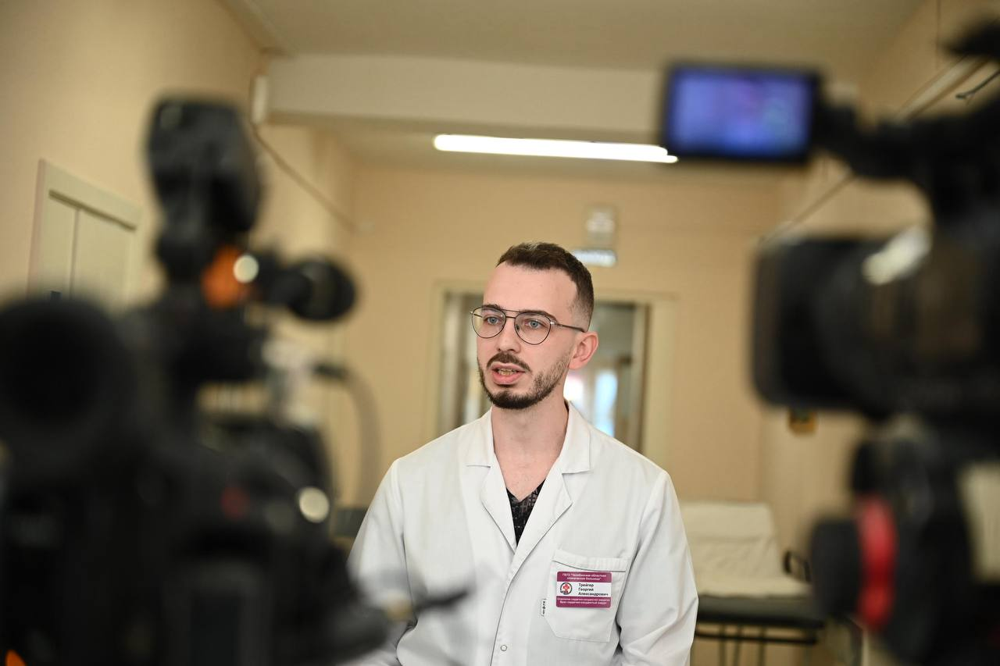
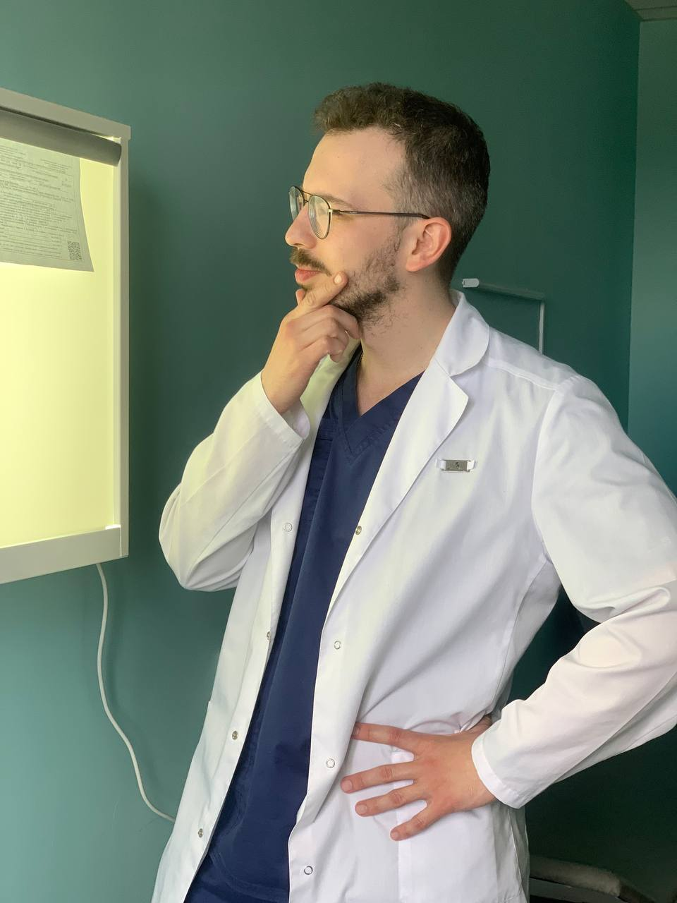
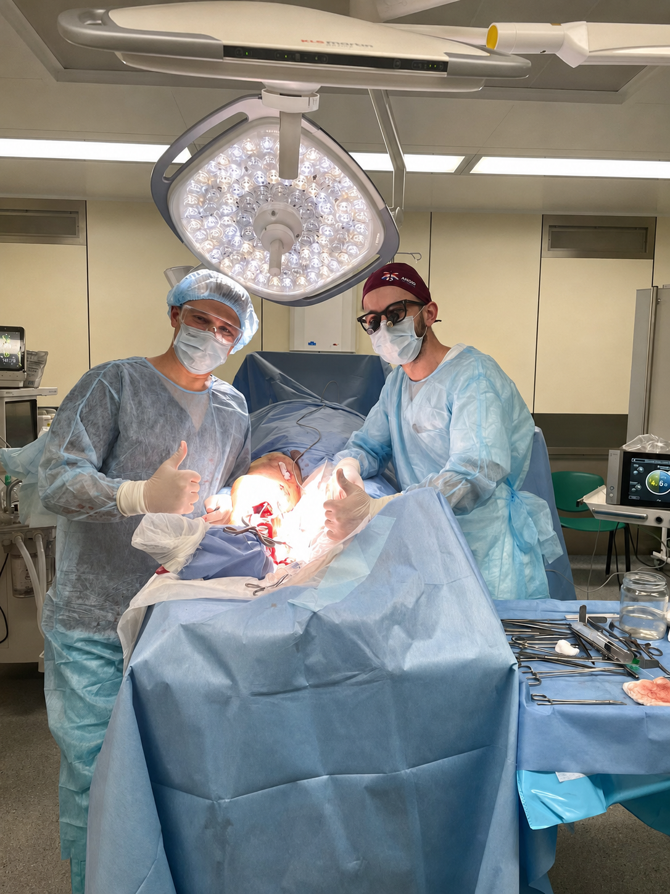
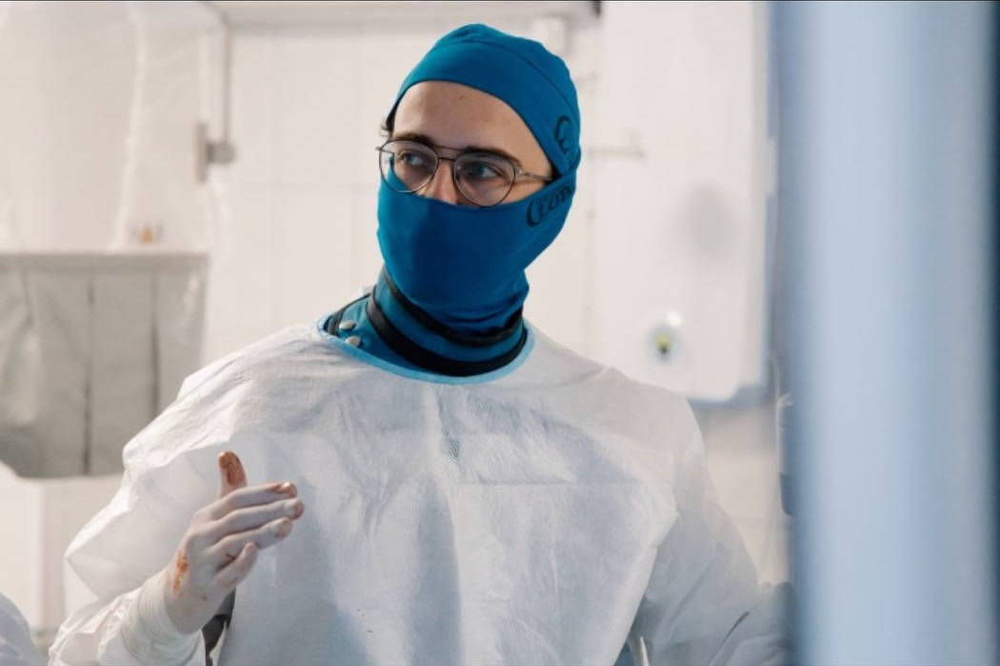
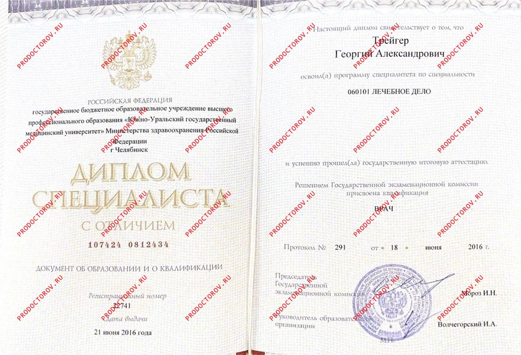
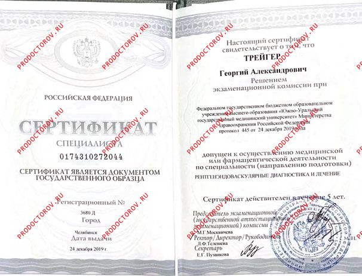

О враче
Георгий
Трейгер
Сосудистый хирург, который берётся за сложные случаи и говорит с пациентом прямо.
Больше 10 лет практики в открытой, эндоваскулярной и гибридной хирургии. Решение по случаю принимаю быстро — по осмотру, УЗДГ и снимкам КТ, без лишних обследований и хождения по кабинетам.


Как я работаю
Быстрое решение без потери внимательности
«Моя задача — не назначить пациенту ещё один круг обследований, а понять, что действительно нужно делать дальше».
Больше 10 лет я оперирую сосуды — вены, артерии и аорту — открытыми, эндоваскулярными и гибридными методами.
Случай оцениваю по осмотру, УЗДГ и снимкам КТ. После этого говорю прямо: нужна операция, наблюдение или дополнительная диагностика. Если пациент не может приехать, сначала разбираю документы дистанционно.


Операционная · работа в команде · подготовка
Опыт в цифрах
Практика, на которую можно опереться
сосудистых реконструкций — открытых, эндоваскулярных и гибридных
Нидерланды
Великобритания
Израиль
Образование и квалификация
Документы, подтверждающие квалификацию


Готовы обсудить случай?
Напишите лично — отвечаю сам
Опишите ситуацию в сообщении, и я отвечу с ближайшим свободным временем — очно или онлайн.